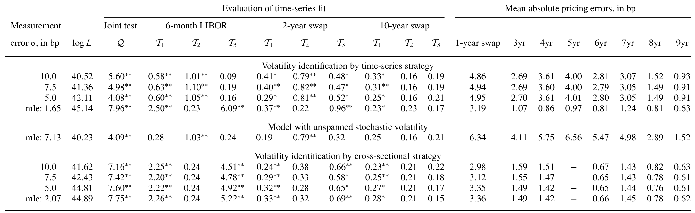
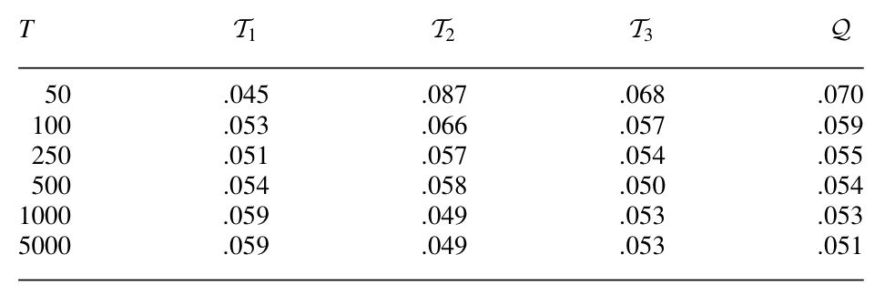
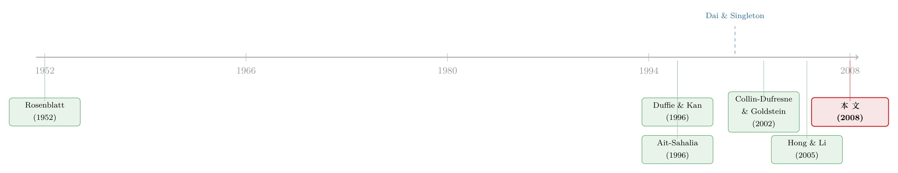

波动率到底藏在哪里？——一篇被「换了把尺子」就翻案的利率期限结构论文
本文读的是 Thompson (2008, Review of Financial Studies)：用同样的仿射模型、同样的 LIBOR-swap 数据，只是换了一套设定检验，就把 Dai and Singleton (2000)「仿射模型拟合得很好」的结论推翻了一半——长端依旧站得住，短端却被强烈拒绝。而真正反直觉的一步是：要修好短端的波动率预测，不需要换模型，只需要换一种估计/识别波动率的方法。本应是最有效率的「横截面」识别反而过不了检验，效率更低的「时间序列」识别却通过了。
1 引言：一个被「换把尺子」就翻案的结论
先讲一个让人有点不安的故事。
2000 年，Dai and Singleton 用一套基于过度识别矩条件 (overidentifying moment restrictions) 的检验，给 仿射期限结构模型 (affine term structure model) 做了一次体检，结论是：仿射模型很好地刻画了 LIBOR-swap 曲线的动态。这几乎成了固定收益计量里的一块基石——既然连正式的设定检验都通过了，那就放心用吧。
可是 Thompson 在这篇文章里做了一件很「危险」的事：他不换模型、不换数据，只把检验工具换了一套，然后再做一遍同样的体检。结果呢？长端（长期限的 swap）依旧没问题，可短端被强烈拒绝。换句话说，仿射模型并不是处处都好——它在曲线的短端、尤其是在刻画 6 个月 LIBOR 的条件方差 (conditional variance) 上，明显设定错了。
注意这句话的分量：「改变设定检验，就改变了结论。」 同一份数据、同一类模型，体检报告却从「健康」变成了「短端有病」。这本身就提醒我们：一个模型「通过了检验」，很大程度上取决于你用的是哪一把尺子。
但这还只是开胃菜。如果故事到此为止，那不过是「我有个更灵敏的检验」。真正关键的一步在于——Thompson 接着问：那要怎么把短端的波动率预测修好？
直觉的答案是「换个更复杂的模型」。可他给出的答案是：不用换模型，换识别波动率的方法就行。 于是反转出现了。
2 核心张力：波动率到底从哪里「读」出来
这篇文章从头到尾都在反复讲透一件事——一个被以往文献忽视的二选一：波动率，到底应该从哪里读出来？
有两条路。
第一条叫「横截面」识别 (cross-sectional approach)。 它的想法是：在某一个时点上，我同时观测到一整条曲线（6 个月、2 年、10 年的利率），这一截「同期观测到的债券收益率横截面」里其实已经隐含了当下的波动率，把它反解 (back out) 出来即可。这条路统治了实证文献，而且有一个极强的理论背书：在模型设定正确的前提下，横截面识别就是极大似然 (maximum likelihood, MLE)——它是最有效率的。
第二条叫「时间序列」识别 (time-series approach)。 它不去看当下这一截横截面，而是从收益率随时间的波动里，间接推断 (impute) 出波动率。这条路效率更低——毕竟它是绕着圈子去猜波动率，而不是从当前收益率里精确地解出来。
现在请记住这个张力：一边是「理论上最优、最有效率」的横截面识别，一边是「理论上更笨、效率更低」的时间序列识别。按教科书，前者应该完胜。
然后 Thompson 把这两种识别出来的波动率分别送进他那套新检验里，结果是——
时间序列识别的波动率，通过了检验；横截面识别的波动率，没通过。
这就是全文那句「surprising result」的来历。一个本该是 MLE、本该最优的方法，却在数据面前栽了。为什么？文章给了两个互相不排斥的解释：
- 其一，仿射模型只是轻微设定错误 (slightly misspecified)。一旦模型有一点点偏，「用哪些矩条件去拟合」就开始影响结果了。时间序列识别去拟合的是收益率近期的波动，而这恰恰是未来波动率更好的预测变量；横截面识别去拟合当前这一截曲线，代价是对未来波动率的预测变差（不过它换来了更小的定价误差）。
- 其二，更深一层：也许债券收益率根本就跨越 (span) 不了波动率——这正是 Collin-Dufresne and Goldstein (2002) 提出的 未跨越随机波动率 (unspanned stochastic volatility, USV)。如果波动率压根不进入收益率的横截面，那么试图从横截面里「反解」波动率，自然是缘木求鱼。
（关于「收益率曲线拟合得再好，也可能对波动率充耳不闻」这条线，可参见《收益率曲线拟合得再好，也可能对波动率「充耳不闻」》。）
接着，一个自然的问题是：Thompson 凭什么敢说自己的检验比 Dai-Singleton 那套更可信？这就要看他这把「新尺子」是怎么造出来的。
3 一把新尺子：从「概率积分变换」到设定检验
这套检验基于一个非常古老的想法，至少可以追溯到 Segal (1938) 和 Rosenblatt (1952)。
想法本身朴素得惊人。设 \(Y_t\) 是某个由连续时间模型生成的债券收益率，模型隐含了它的条件分布函数
$$ F_\tau(y,\theta_0) \equiv \Pr[\,Y_{\tau\Delta} \le y \mid I_{(\tau-1)\Delta},\,\theta_0\,]. $$
这里 \(I_{(\tau-1)\Delta}=\{Y_0,Y_\Delta,\dots,Y_{(\tau-1)\Delta}\}\) 是直到上一期的全部历史信息，\(\theta_0\) 是真实参数。一个在概率论里反复出现的事实是：如果模型是对的，那么把数据代进它自己的条件分布函数，得到的变换值 \(F_\tau(Y_{\tau\Delta},\theta_0)\) 会服从 $[0,1]$ 上独立同分布的均匀分布 (iid uniform)。
于是检验就变得极其干净：与其去检验那个复杂的、非线性的原模型，不如把数据「过一遍」它自己的分布函数，再去检验得到的这串变换值是不是 iid 均匀的。是，模型就站得住；不是，就拒绝。Thompson 把这个一维的想法推广到多元 (multivariate)，这才是利率期限结构真正需要的——因为我们要同时面对一整条曲线。
但把这个漂亮想法落成一个正式的统计检验，有两道坎：一是这些变换怎么算（很多连续时间模型根本没有解析的条件分布函数）；二是参数要估计，而一旦在估计值 \(\hat\theta\) 而非真值 \(\theta_0\) 处求变换，那串变换值就不再是 iid 均匀的了——这会污染检验统计量的零分布。Thompson 的贡献正是把这两道坎都解决了：他用一个有限状态 Markov 模型去逼近连续时间的波动率模型（状态数越多越接近真模型），从而得到似然函数的闭式表达；又推导出修正了参数估计影响后的零分布。
检验统计量长这样：对大值拒绝零假设，
$$ Q = n\int_0^1 M(s)'\,W^{-1}\,M(s)\,ds, $$
其中 \(M(s)\) 是一个 \(L\) 维的矩函数 (moment functions) 向量，在零假设下期望为零；\(W\) 是一个不依赖 \(s\) 的权重矩阵。用矩「函数」而不是有限个矩「条件」，是因为零假设的含义本质上是无穷多个矩条件——就像检验均匀性时，直方图分多少个箱子是任意的，干脆让箱子数趋于无穷，得到中心化、标准化的经验分布函数。
文章实证里取 \(L=3\)，配上两个精心挑选的函数 \(g_2(x)=x\) 和 \(g_3(x)=2|x-.5|\)，此时 \(W\) 恰好是单位阵，于是
$$ Q = n\int_0^1\!\big[M_1^2(s)+M_2^2(s)+M_3^2(s)\big]\,ds, $$
而每个 \(T_i=\int_0^1 M_i^2(s)\,ds\) 都是 \(Q\) 的特例。三者分工明确：\(T_1\) 抓偏离均匀性，\(T_2\) 抓残差之间的相关，\(T_3\) 抓中心化残差绝对值之间的相关。最后这个 \(T_3\) 是点睛之笔——它沿用 Kim, Shephard, and Chib (1998) 的洞见：残差完全可以序列不相关，却仍然有可预测的、时变的方差；这种「藏在二阶矩里」的依赖，正好会在 \(g_3\) 项的相关里露出马脚。而短端 LIBOR 波动率的误设，恰恰就是这种二阶矩问题。 这把尺子天生就是为抓波动率误设而磨的。
临界值怎么来？Thompson 证明了（Theorem 1），在零假设和若干正则条件下，
$$ Q \;\Rightarrow\; \sum_{j=1}^{\infty}\lambda_j\,\chi_j^2, $$
是一串独立标准正态平方（即 \(\chi^2_1\)）的加权和，权重 \(\lambda_j\) 是某个矩阵 \(\Lambda\) 的特征值。实际计算时截断到有限项即可（文中取 \(J=25\)、做 10,000 次模拟），临界值几乎瞬间就能得到——这比动辄要重估参数的参数化自助法 (parametric bootstrap) 省太多算力。
4 仿射模型与两种识别：FP 与 FC
把检验造好之后，文章把它用到 Duffie and Kan (1996) 与 Duffee (2002) 的仿射因子模型上。模型设定为：
整篇文章的张力，最终落到了怎么去识别那个 \(S_t\) 上。Thompson 用两个条件分布函数把「两条路」形式化了：
$$ F^{P}_{i\tau}(z,\theta_0) \equiv \Pr[\,Y_{i,\tau\Delta}\le z \mid I_{(\tau-1)\Delta},\,\theta_0\,], $$
$$ F^{C}_{i\tau}(z,\theta_0) \equiv \Pr[\,Y_{i,\tau\Delta}\le z \mid Y_{1,\tau\Delta},\dots,Y_{i-1,\tau\Delta},\,I_{(\tau-1)\Delta},\,\theta_0\,]. $$
差别只在「条件里有没有同期信息」：
- \(F^{P}\)（P 取 past）只用过去的信息——它概括的是模型对单个收益率的时间序列预测。把波动率从这里读出来，就是「时间序列」识别。
- \(F^{C}\)（C 取 contemporaneous）既用过去、又用同期其它收益率 \(Y_{1,\tau\Delta},\dots,Y_{i-1,\tau\Delta}\)——它把模型对横截面的预测也吃进去了。把波动率从这里读出来，就是「横截面」识别。
于是「波动率从哪里读」这个看似哲学的问题，被干净地翻译成了「用 \(F^P\) 的广义残差，还是用 \(F^C\) 的广义残差去做检验」。Thompson 把广义残差形象地叫做「广义残差 (generalized residual)」：它就是把传统回归残差 \(\hat\varepsilon\) 再过一道正态分布函数 \(\Phi(\hat\varepsilon)\) 得到的东西。检验它是不是 iid 均匀，就等价于检验模型对均值、方差、乃至更高阶动态的设定对不对。
值得一提的是：构造 \(F^C\) 时，收益率的排序是任意的（先放 LIBOR 还是先放 2 年 swap 都行），不同排序会给出不同的统计量值，但文中报告说，未报告的稳健性检查里不同排序的结果非常接近。
5 数据
数据本身朴实：\(Y_t=(l_t,\,c_{t,2},\,c_{t,10})'\)，其中 \(l_t\) 是 6 个月 LIBOR，\(c_{t,2}\) 和 \(c_{t,10}\) 分别是 2 年期与 10 年期普通香草利率互换 (plain vanilla swap) 的息票率。
- 频率与样本量：周度，
n = 783个观测。 - 样本期：1988 年 6 月至 2003 年 6 月（图 1 给出的精确区间是 10 June 1988 到 12 June 2003）。
- 来源：
Datastream，其中 LIBOR 来自英国银行家协会 (British Bankers' Association)，swap 利率来自 ICAP Information Services。
关键是：这套数据和模型与 Dai and Singleton (2000) 用的是同一套——所以结论的差异只能归因于检验方法，不能赖在数据上。这是本文「翻案」最有说服力的地方。
6 主要结果
把检验跑下来，三句话概括：
第一，长端没问题，短端被拒。 对较长期限的 swap，仿射模型的广义残差通过了均匀性与独立性的检验，这与 Dai-Singleton 的结论一致；但在短端，检验强烈拒绝仿射模型，而拒绝主要由 6 个月 LIBOR 的条件方差设定错误驱动——也就是 \(T_3\) 类统计量在发力。
下表给出四因子模型的参数估计与各项设定检验的结果，是全文实证的主表。

Table 2: reports results for four-factor models. Parameter estimates appear in
第二，也是全文最反直觉的一句：换识别方法，短端就修好了。 用时间序列识别（\(F^P\)）得到的波动率通过了检验，用横截面识别（\(F^C\)）得到的波动率没通过——尽管后者在正确设定下本该是 MLE、本该更有效率。换言之，问题不在模型的「类别」，而在「你让模型去拟合数据的哪一面」。
第三，关于 USV 的结论很微妙。 Thompson 在统计上拒绝了 USV 施加的模型限制，但他指出，这个拒绝似乎是被定价误差 (pricing errors) 驱动的，而不是波动率模型本身错了——因为只要采用时间序列识别策略，USV 隐含的波动率会紧紧跟随不受限仿射模型隐含的波动率。这就把「USV 这个限制是否成立」与「波动率到底该怎么识别」两个问题分开了。
那这套新检验在有限样本里靠不靠谱？文章做了蒙特卡洛，考察从 50 到 5000 各种样本量下检验的实际水平 (size)。

Table 5: presents size results for sample sizes ranging from 50 to 5000
如表 5 所示，检验的实际拒绝率在各样本量下都比较接近名义水平——这正是把数据变换到（近似）独立均匀项之后的好处：即便底层模型高度持续 (persistent)，对零分布的渐近逼近依然准确。这一点很重要，因为 Pritsker (1998) 早就指出，利率模型的持续性会严重扭曲 Ait-Sahalia (1996) 那类检验的实际水平。文章还做了一个小型的功效 (power) 对比，结论是在某些相关备择下，本文的检验显著强于 Hong and Li (2005)。
7 文献脉络
把这条线捋一捋，会看到一个相当清晰的「正—反—合」。
最早，是把模型隐含的分布「变换到均匀」这个统计学老想法——Segal (1938)、Rosenblatt (1952) 就埋下了种子。利率建模这一侧，Vasicek (1977) 的均衡期限结构开了头，真正成为现代框架基石的是 Duffie and Kan (1996) 的仿射收益率因子模型：它好用、可解析，迅速统治了衍生品定价与期限结构预测。
接着，一个自然的问题是：仿射模型到底配不配得上数据？Dai and Singleton (2000) 用 Gallant and Tauchen (1996) 的半非参矩条件做了过度识别检验，给出「配」的判决——这成了被广泛引用的「正题」。但与此同时，Collin-Dufresne and Goldstein (2002) 从期权隐含波动率的角度提出了「反题」：仿射模型对波动率有反事实的含义，债券收益率可能根本跨越不了波动率（USV）。Hong and Li (2005) 则几乎在同期，提出了基于非参核估计、能正确处理参数估计的一族检验，且被证明对所有备择一致 (consistent)。

Thompson (2008) 站在这堆张力的交汇处，做的是「合」：他不用核估计（因此不一定一致），而是走 GMM 式的矩函数路线，换来在某些相关备择上更高的功效；他用同一套数据复核 Dai-Singleton，既部分支持（长端）又部分推翻（短端）；他把 USV 的争论重新框定为「识别策略之争」，指出问题的核心不在模型类别，而在波动率的识别方式。它既是方法论文，又是一篇有强烈实证立场的复核。
8 评论与延伸（Q&A + 研究方向）
(a) 几个可能的疑问
Q：「时间序列识别」和「横截面识别」到底差在哪？为什么后者明明是 MLE 反而被拒？
差别只在「条件集里有没有同期的其它收益率」：\(F^C\) 用了同期横截面，\(F^P\) 只用过去。在设定完全正确时，\(F^C\) 等价于 MLE，最有效率。但现实里仿射模型只是「大致对」，一旦有轻微误设，「用哪些矩去拟合」就开始决定你拟合好了哪一面、牺牲了哪一面。横截面识别把模型逼着去完美解释当前这一截曲线，代价是对未来波动率预测变差；而恰恰是收益率近期的时间序列变动，才是未来波动率更好的预测变量。
Q：既然横截面识别效率更高，为什么还要选「更笨」的时间序列？
因为「有效率」是有条件的——它以模型正确为前提。模型一旦轻微误设，MLE 的最优性就失去了意义；这时谁能更好地预测你真正关心的对象（这里是未来波动率），谁才是赢家。这是全文最值得带走的方法论教训：efficiency 是相对于"模型正确"而言的，misspecification 一来，账就要重算。
Q：这套检验和 USV（未跨越随机波动率）是不是一回事？
不是，但相关。USV 是关于「波动率进不进收益率横截面」的一个模型性质；本文的检验是关于「用哪种识别得到的波动率能通过设定检验」的一个实证发现。两者在「横截面到底含不含波动率信息」这一点上交汇：如果 USV 成立，横截面识别天然会失败，这与本文「横截面识别没通过」的发现方向一致。但本文统计上拒绝了 USV 限制，且把这个拒绝归因于定价误差而非波动率模型——所以它没有简单地拥抱 USV。
Q：同样的数据，为什么 Dai-Singleton 没拒、本文却拒了？
因为检验灵敏度不同。Dai-Singleton 用的是过度识别矩条件检验，矩条件由 Gallant-Tauchen 的半非参模型生成；本文用的是「变换到均匀 + 矩函数」的路线，且特意配了 \(g_3(x)=2|x-.5|\) 这样专门抓二阶矩依赖的函数。短端 LIBOR 的毛病正是「序列不相关、但条件方差可预测」这种二阶矩问题——前一套尺子量不出来，后一套量得出来。
Q：\(g_3(x)=2|x-.5|\) 这个怪函数凭什么能抓到波动率误设？
关键在于：残差可以完全序列不相关（\(g_2\) 项看不出问题），却仍然有时变、可预测的方差。这种隐藏的依赖不会体现在残差本身的自相关里，但会体现在「残差离中心 0.5 有多远」这个量的自相关里——而 \(2|x-.5|\) 正是在度量这个「离中心的距离」。所以它是专门为波动率误设设计的探针。
Q：和 Hong and Li (2005) 的非参检验比，谁更强？
各有胜负。Hong 的检验基于非参核估计，被证明对所有备择一致，因此可能抓到本文遗漏的备择；本文的检验本质是 GMM 式的，矩选得不好就会漏掉某些备择（不一致）。但核估计收敛速度慢于常规速率，所以在大样本里，本文检验对某些相关备择应有更好的功效——文中那个小型蒙特卡洛里，本文检验的功效显著高于 Hong and Li (2005)。
(b) 几个可能的研究问题与提案
1. 把 FP/FC 检验搬到公司债收益率曲线 - 【经济故事】公司债的信用利差期限结构同样要识别波动率，而信用风险的随机波动比利率更剧烈。横截面识别在这里会不会更早崩溃？把本文「两种识别」的对照搬过来，能直接检验信用利差模型是「模型错」还是「识别错」。 - 【可行性】中。数据用 TRACE 成交价 + Mergent FISD 发行信息构造发行人层面的利差曲线；识别策略现成（本文的 \(F^P\) vs \(F^C\)）。难点是公司债成交稀疏、价格离散，条件分布的逼近会更糙。
2. 流动性危机里横截面识别的「失灵」 - 【经济故事】本文暗示横截面识别在模型轻微误设时就会失效。那么在流动性枯竭的窗口（如 2020 年 3 月），横截面里塞满了流动性噪声而非波动率信息，横截面识别应当系统性地败给时间序列识别。这能给「危机里不要信价格、要信时间序列」提供一个计量上的注脚。 - 【可行性】中。需要高频公司债/国债曲线 + 一个可观测的流动性冲击窗口；识别靠本文检验在危机前后的对照。诚实地说，难点是把「识别失灵」与「模型在危机里本就该换」区分开。
3. 外资持有人与短端波动率的可跨越性 - 【经济故事】外资偏好不同期限的债券（往往集中在长端或特定品种），这会改变各期限收益率所承载的信息结构。一个有意思的猜想是：外资持有比例越高的期限段，其收益率横截面对波动率的「跨越能力」越弱（USV 更严重），从而横截面识别更容易失败。 - 【可行性】低-中。需要把期限分段的外资持有数据（如 TIC 或托管层面数据）与本文的识别对照拼起来，识别外资份额是外生的相当困难。更像是一个探索性的相关性研究。
4. 基准转换（LIBOR→SOFR）后的波动率识别复核 - 【经济故事】本文用的正是 LIBOR-swap 曲线，而 LIBOR 已退场。SOFR 的微观结构（隔夜、有担保）与 LIBOR 截然不同，短端的条件方差结构很可能变了。用本文的 \(T_3\) 类检验复核 SOFR 曲线，能回答「基准换了之后，仿射模型短端的老毛病还在不在」。 - 【可行性】中。SOFR-OIS/swap 数据已较充分，方法完全照搬本文，是一个干净、可复制的更新型研究。
我自己的判断。这篇文章最大的贡献，不在于「又造了一个更灵敏的检验」，而在于它把「波动率识别」从一个被默认、被忽视的技术细节，提升成了一个一阶的实证选择：同一个模型、同一份数据，仅仅因为你从横截面还是从时间序列去读波动率，结论就可以从「通过」变成「拒绝」。这是一个会让人重新审视一大批「用横截面反解波动率」的实证文献的发现。
对识别的担忧也有两点。其一，本文的检验本质是 GMM 式的、不一致 (not consistent) 的——矩函数选得好不好，直接决定了能不能抓到误设；\(g_2,g_3\) 抓住了短端的二阶矩问题，但难保没有别的误设被这组矩漏掉，这一点文章自己也坦承。其二，「横截面识别失败」与「USV 成立」「模型轻微误设」三者在观测上并不容易彻底分开——本文拒绝了 USV 限制，又说拒绝是定价误差驱动的，这套论证依赖于「USV 隐含波动率紧跟不受限模型」这一经验观察，逻辑上稍显迂回。
后续我最想看到的，是把这套「两种识别」的对照系统性地搬到信用市场：公司债的波动率识别远比利率更脏、更受流动性污染，如果横截面识别在那里败得更彻底，那本文的教训就不止是「利率短端的小毛病」，而是一条贯穿整个固定收益实证的方法论警告——在你相信价格之前，先问一句：我到底是从哪里把波动率读出来的？
参考文献
Ait-Sahalia, Y. (1996). Testing Continuous-Time Models of the Spot Interest Rate. The Review of Financial Studies 9(2), 385–426.
Collin-Dufresne, P., and R. Goldstein. (2002). Do Bonds Span the Fixed Income Markets? Theory and Evidence for Unspanned Stochastic Volatility. Journal of Finance 57(4), 1685–1730.
Collin-Dufresne, P., R. Goldstein, and C. S. Jones. (2004). Can Interest Rate Volatility Be Extracted from the Cross Section of Bond Yields? An Investigation of Unspanned Stochastic Volatility. NBER Working Paper No. 10756.
Dai, Q., and K. J. Singleton. (2000). Specification Analysis of Affine Term Structure Models. Journal of Finance 55, 1943–1978.
Duffee, G. R. (2002). Term Premia and Interest Rate Forecasts in Affine Models. Journal of Finance 57, 405–443.
Duffie, D., and R. Kan. (1996). A Yield-Factor Model of Interest Rates. Mathematical Finance 6(4), 379–406.
Gallant, A. R., and G. Tauchen. (1996). Which Moments to Match. Econometric Theory 12, 657–681.
Hong, Y., and H. Li. (2005). Nonparametric Specification Testing for Continuous-Time Models with Application to Spot Interest Rates. Review of Financial Studies 18, 37–84.
Kim, S., N. Shephard, and S. Chib. (1998). Stochastic Volatility: Likelihood Inference and Comparison with ARCH Models. Review of Economic Studies 65, 361–393.
Pritsker, M. (1998). Nonparametric Density Estimation and Tests of Continuous Time Interest Rate Models. Review of Financial Studies 11(3), 449–487.
Rosenblatt, M. (1952). Remarks on a Multivariate Transformation. Annals of Mathematical Statistics 23(3), 470–472.
Segal, I. E. (1938). Fiducial Distribution of Several Parameters with Application to a Normal System. Cambridge Philosophical Society Proceedings 33, 41–47.
Thompson, S. (2008). Identifying Term Structure Volatility from the LIBOR-Swap Curve. Review of Financial Studies 21(2), 819–854.
Vasicek, O. (1977). An Equilibrium Characterization of the Term Structure. Journal of Financial Economics 5, 177–188.